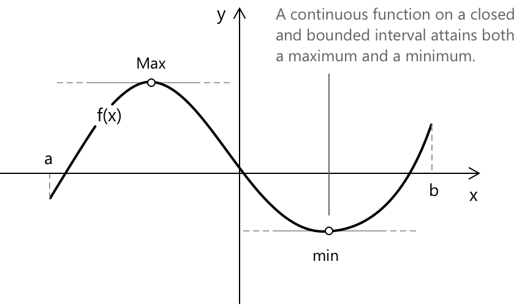
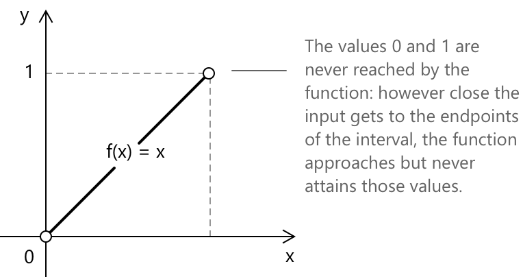

Теорема Вейєрштрасса
Формулювання
Нехай \( f : [a,b] \to \mathbb{R} \) — функція, неперервна на замкненому та обмеженому проміжку \( [a,b] \). Тоді існують точки \( x_{\min}, x_{\max} \in [a,b] \), такі що:
\[ f(x_{\min}) \le f(x) \le f(x_{\max}) \quad \forall \; x \in [a,b] \]
Іншими словами, неперервна функція на замкненому проміжку досягає як свого мінімуму, так і свого максимуму. Цей результат часто називають теоремою про граничні значення. Наступний графік ілюструє теорему: функція досягає максимуму та мінімуму у двох внутрішніх точках проміжку \( [a, b] \).

Корисно пов'язати позначення з рисунком. Величина \( f(x_{\max}) \) позначає значення функції в точці, позначеній як Max на графіку, тобто найвищу точку, досягнуту на проміжку. Аналогічно, \( f(x_{\min}) \) представляє значення функції в точці, позначеній як min, де графік досягає свого найнижчого значення.
Кожне припущення відіграє певну роль.
-
Проміжок має бути замкненим і обмеженим. Замкнений означає, що кінцеві точки включені. Обмежений означає, що він має скінченну довжину. Разом ці умови виражають компактність на дійсній прямій.
-
Неперервність є однаково важливою. Теорема не вимагає диференційовності. Вона лише вимагає, щоб функція не мала стрибків або розривів на проміжку.
-
Якщо будь-яку з цих умов прибрати, висновок може бути хибним.
Повне доведення виходить за межі цієї сторінки, але основна ідея проста. На замкненому та обмеженому проміжку неперервна функція не може розбігатися або пропускати значення. Оскільки проміжок включає свої кінцеві точки, а неперервність запобігає стрибкам, функція не просто наближається до своїх найбільших і найменших значень; вона фактично їх досягає.
Чому важлива замкненість та обмеженість
Розглянемо функцію \( f(x) = x \) на відкритому проміжку \( (0,1) \).

Функція є неперервною, проте вона не має ні максимуму, ні мінімуму на цьому проміжку. Інфімум дорівнює \( 0 \), а супремум дорівнює \( 1 \), але жодне з цих значень не досягається, оскільки кінцеві точки не включені.
Тепер розглянемо \( f(x) = \dfrac{1}{x} \) на \( (0,1] \). Проміжок обмежений, але не замкнений. Функція є неперервною на своїй області визначення, проте вона не досягає максимуму. При \( x \to 0^+ \) функція зростає без обмеження.
Ці приклади показують, що компактність області визначення є не технічною деталю, а структурною причиною, чому теорема виконується.
Приклад 1
Тепер розглянемо конкретне застосування теореми. Розглянемо функцію:
\[ f(x) = x^3 – 3x \]
на проміжку \( [-2,2] \). Це поліном, отже, він неперервний на всій дійсній прямій. Зокрема, він неперервний на замкненому та обмеженому проміжку \( [-2,2] \). За теоремою Вейєрштрасса ми вже знаємо, що функція повинна досягати як максимуму, так і мінімуму десь на цьому проміжку. Щоб визначити, де ці екстремальні значення виникають, скористаємося диференціальним численням. Спочатку обчислимо похідну:
\[ f’(x) = 3x^2 – 3 = 3(x^2 – 1) \]
Критичні точки отримуємо, розв'язавши \( f’(x)=0 \):
\[ 3(x^2 – 1)=0 \quad \rightarrow \quad x^2=1 \]
отже, маємо:
\[ x=-1 \quad x=1 \]
Це єдині внутрішні точки, де кутовий коефіцієнт дотичної дорівнює нулю. Однак абсолютні екстремуми на замкненому проміжку можуть також виникати на кінцях проміжку. З цієї причини ми обчислюємо значення функції у всіх кандидатах: критичних точках та кінцевих точках.
\[ \begin{array}{ll} f(-2) = -2 & f(-1) = 2 \\[6pt] f(1) = -2 & f(2) = 2 \end{array} \]
Порівнюючи ці значення, ми зауважимо, що максимальне значення дорівнює \( 2 \), яке досягається при \( x=-1 \) та \( x=2 \), тоді як мінімальне значення дорівнює \( -2 \), яке досягається при \( x=-2 \) та \( x=1 \).
Підсумовуючи, одним із важливих моментів цього прикладу є те, що теорема Вейєрштрасса не повідомляє нам, де розташовані екстремальні значення і скільки їх. Вона просто гарантує, що вони існують. Саме похідна дозволяє нам знайти їх явно.
Область значень неперервної функції
Нехай \( f \) є неперервною на замкненому та обмеженому проміжку \( [a,b] \). Згідно з теоремою Вейєрштрасса, \( f \) досягає мінімального значення \( m \) та максимального значення \( M \) на \( [a,b] \). Це означає, що існують точки \( x_{\min}, x_{\max} \in [a,b] \), такі що
\[ f(x_{\min}) = m \qquad f(x_{\max}) = M \]
Згідно з теоремою про проміжні значення, функція набуває кожного значення між \( m \) та \( M \). Іншими словами, якщо \( y \) задовольняє умову:
\[ m \le y \le M \]
тоді існує таке \( x \in [a,b] \), що \( f(x) = y \). Поєднуючи ці два факти, ми робимо висновок, що образ \( f \) — це саме \(f([a,b]) = [m, M].\) Таким чином, неперервна функція на замкненому проміжку не залишає прогалин у своїх значеннях, і її область значень сама є замкненим проміжком.
Де використовується ця теорема
Теорема Вейєрштрасса відіграє пряму роль у доведеннях кількох фундаментальних теорем диференціального числення.
- Теорема Ферма спирається на неї, щоб гарантувати, що максимум або мінімум дійсно існує на проміжку, перш ніж зробити висновок, що похідна в цій точці має бути рівною нулю.
- Теорема Ролля використовує її для встановлення того, що функція досягає свого максимуму та мінімуму на замкненому проміжку, що є першим кроком її доведення.
- Теорема Лагранжа залежить від теореми Ролля і, отже, опосередковано, також і від теореми Вейєрштрасса.
Вибрана література
-
University of Washington, J. Burke. Weierstrass Extreme Value Theorem
-
University of California Davis, J. Hunter. Continuous Functions
-
University of Washington, J. Lee. The Extreme Value Theorem in Two Variables
-
University of Chicago, J. Murphy. Topological Proofs of the Extreme Value Theorems